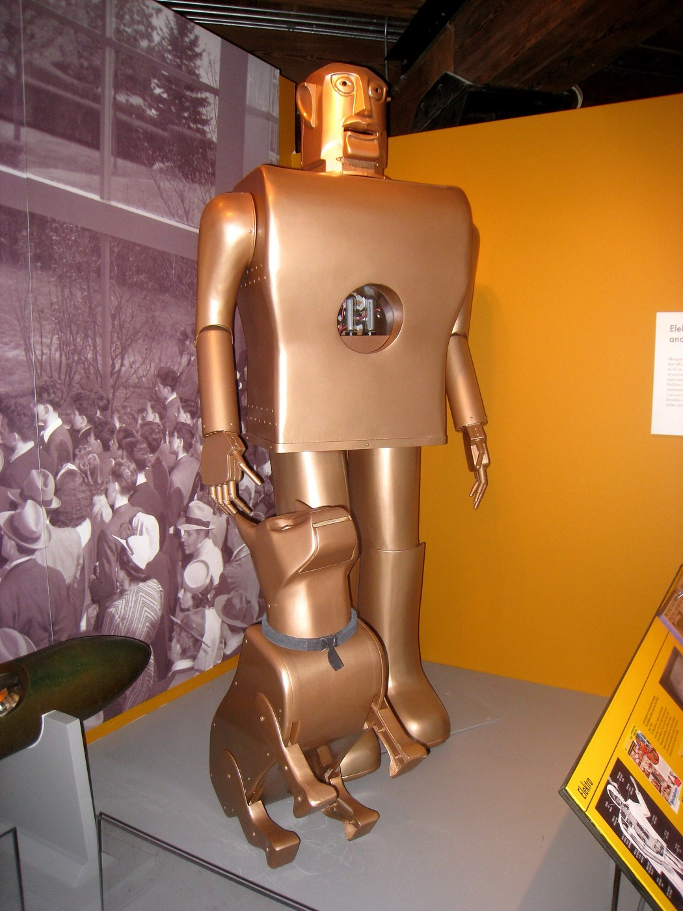
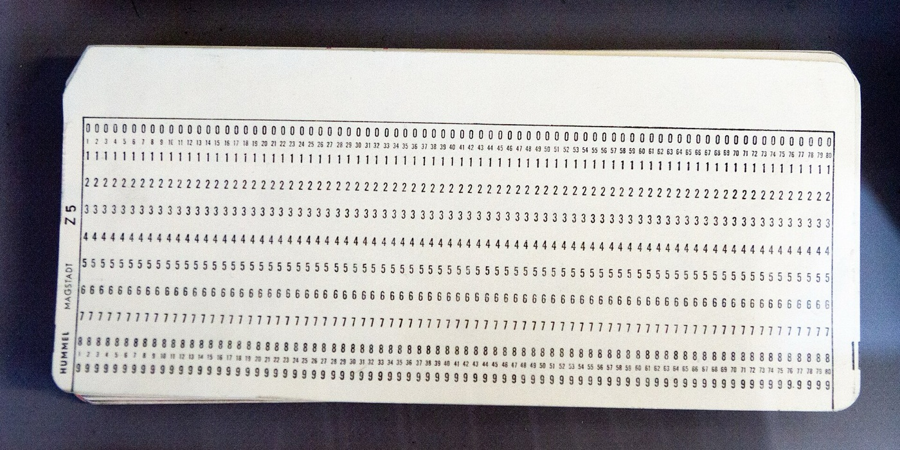

Тексты и письма
- Напишет письмо, жалобу или поздравление
- Перескажет длинный договор в пяти строчках
- Исправит ошибки и сделает тон вежливее
- Переведёт с любого языка
- ChatGPT
- GigaChat
- YandexGPT
- Claude
Нейросети без айтишного языка: что это такое, как ими пользоваться и где они правда экономят время на работе и дома.
Подписаться на рассылку
Нейросеть — не робот из кино. Это программа: вы пишете ей обычными словами, а она отвечает, считает и рисует.
Мы пишем для тех, кто застал дисковый телефон, плёночный «Зенит» и первые компьютеры на работе. Вы видели, как менялась техника, и с этим разберётесь. Без терминов, а если без них никак, сразу объясняем.
Нейросети бывают для разных целей. Вот четыре главных и то, что каждая умеет уже сегодня.

Первый электронный компьютер ENIAC занимал зал в 167 квадратных метров, и новую задачу ему по несколько дней задавали проводами. Нейросеть, которая умеет несравнимо больше, сегодня помещается в кармане и понимает обычную речь.
27 т
1946. Столько весил ENIAC. Программировали его шесть человек, переключая провода и тумблеры.
200 г
Сегодня. Примерно столько весит смартфон. Чтобы дать ему задачу, достаточно написать или сказать её вслух.
Выберите задачу, и мы покажем, что написать нейросети. Скопируйте текст и вставьте в любой чат-бот: ChatGPT, GigaChat или Алису.
Помоги составить официальное письмо в управляющую компанию. Уже две недели в подъезде дома по адресу [адрес] протекает крыша над пятым этажом, на стене плесень. Я звонил(а) диспетчеру [дата], но ничего не сделали. Попроси устранить протечку в течение 10 дней и сослаться на нужные правила. Тон вежливый, но твёрдый.
Что получите: готовое письмо с шапкой, ссылкой на правила содержания дома и сроком ответа. Останется подставить адрес и подписать.
Составь меню ужинов на неделю для семьи из трёх человек. В холодильнике есть: курица, картошка, капуста, яйца, гречка, морковь, сыр. Готовить хочу не дольше 40 минут. В конце дай общий список покупок, сгруппированный по отделам магазина.
Что получите: семь ужинов с короткими рецептами и один список покупок, который можно отправить в мессенджер.
Напиши тёплое поздравление коллеге с 55-летием. Её зовут Ольга Петровна, мы работаем вместе 12 лет, она главный бухгалтер, любит дачу и путешествия. Без пафоса и стихов, 5–6 предложений, от имени всего отдела.
Что получите: несколько вариантов текста. Попросите «сделай короче» или «добавь юмора», если первый не подошёл.
Ниже текст договора с интернет-провайдером. Объясни простыми словами: сколько я буду платить, что будет, если захочу расторгнуть договор раньше, и есть ли пункты, на которые стоит обратить внимание. Текст: [вставьте договор]
Что получите: короткий пересказ и список подозрительных мест. Важные решения всё равно сверяйте с самим договором.
Мы с женой хотим съездить на выходные из Москвы на машине, не дальше 300 км. Любим старые города, хорошую еду и неспешные прогулки, не любим толпы. Предложи три варианта с маршрутом на два дня и примерным бюджетом.
Что получите: три готовых маршрута. Часы работы музеев и цены перепроверьте на сайтах: нейросеть может знать устаревшие данные.
В Excel в столбце A даты покупок, в столбце B категория (продукты, транспорт, дом), в столбце C сумма. Напиши формулу, которая посчитает, сколько я потратил(а) на продукты за октябрь, и объясни по шагам, куда её вставить.
Что получите: готовую формулу и инструкцию, куда нажимать. Если что-то не сработает, просто напишите, какую ошибку видите.
Разборы от первого шага до привычки. Каждый читается за чашку чая.
Слова, которые звучат сложно, а означают простые вещи.
Скорее изменит её. Тот, кто поручает нейросети рутину, освобождает время для того, что требует опыта и живого общения. Мы показываем, какие задачи можно отдать уже сейчас.
Если вы пишете сообщения в мессенджере, справитесь. С нейросетью говорят обычными словами, никаких команд учить не нужно.
У большинства сервисов есть бесплатная версия: её хватает для писем, вопросов и картинок. Платная нужна для больших объёмов, и в статьях мы пишем, где сколько стоит.
Не вводите паспортные данные, номера карт, пароли и медицинские документы. В остальном ведите себя как с незнакомым специалистом: по делу и без лишнего.
Да, и уверенным тоном. Цифры, даты, законы и советы о здоровье всегда перепроверяйте, а с лечением идите к врачу.
Выберите одну задачу, которая отнимает у вас время, и поручите её чат-боту. Готовые запросы есть выше, в разделе «Попробуйте сами».
Новый разбор, один полезный запрос и честные новости. Отписаться можно в один клик.
Готово! Первое письмо придёт в ближайший понедельник.
Не получилось отправить. Попробуйте ещё раз.